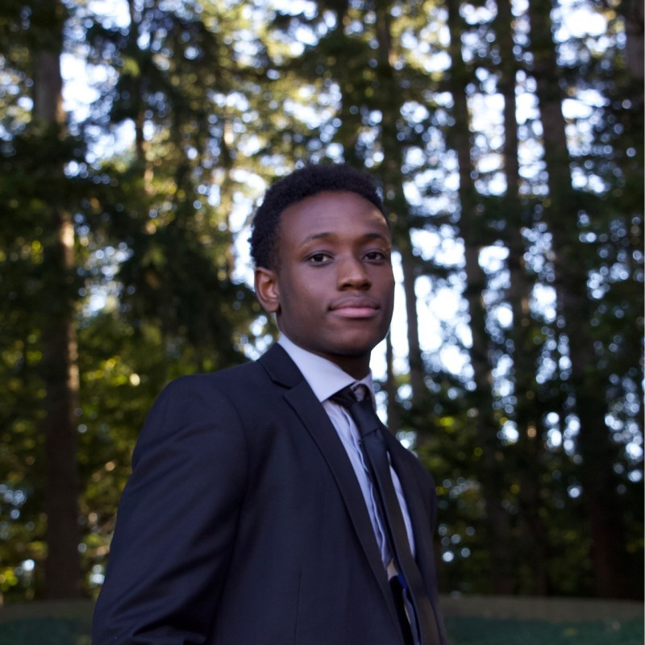
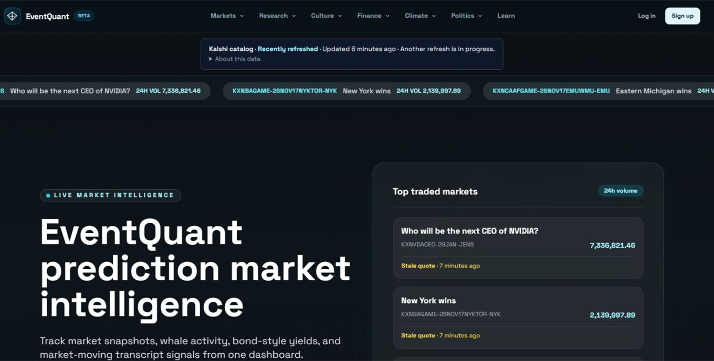
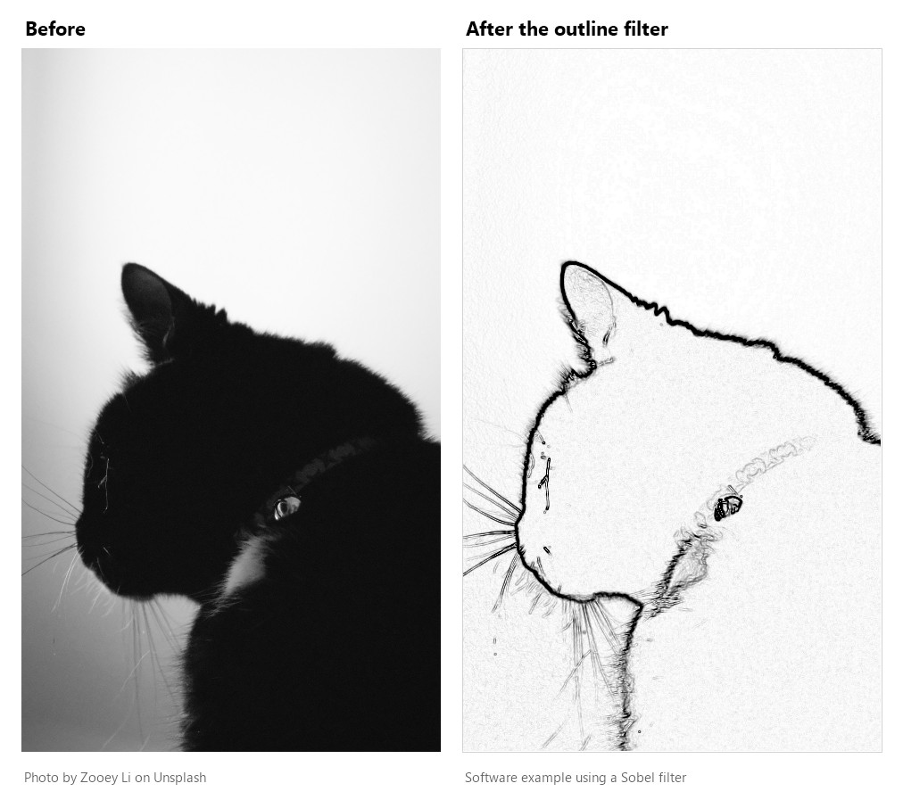
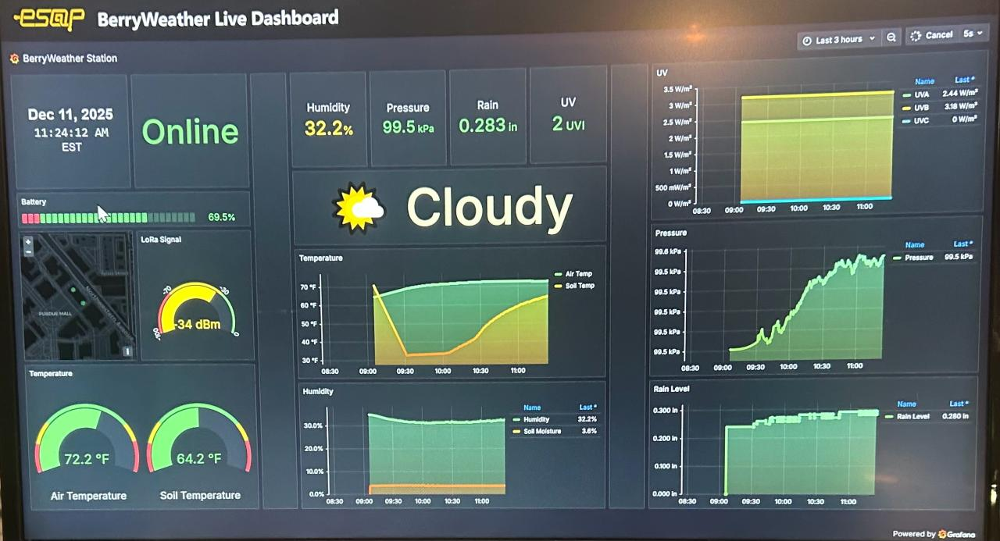

Founder & Full-Stack Developer
Aug 2025 – Present
EventQuant
Launched a prediction-market research platform, built MongoDB infrastructure for historical market data, and interviewed about 50 early users to prioritize features.
Read the case study
Purdue University · West Lafayette, Indiana
Electrical engineering student & founder of EventQuant
I build research tools for prediction markets and work on embedded firmware and digital chip design.
I study electrical engineering at Purdue and expect to graduate in fall 2028. At EventQuant, I use interviews and market data to decide what to build, then develop and ship the tools myself. At Purdue, I work on the hardware and firmware behind image processing and real-time sensor systems.
Aug 2025 – Present
EventQuant
Launched a prediction-market research platform, built MongoDB infrastructure for historical market data, and interviewed about 50 early users to prioritize features.
Read the case studyAug 2026 – Present
Purdue STARS
Lead a four-person team developing a grayscale image-processing chip. Coordinate design, verification, and integration milestones and work on the chip’s SPI interface.
See the STARS projectSep 2025 – Jan 2026
Embedded Systems at Purdue
Wrote ESP32 firmware for BerryWeather, a low-cost weather monitoring system, and integrated sensors over 1-Wire and I²C.
See the BerryWeather projectAug 2025 – Present
National Society of Black Engineers · Purdue University
Meet weekly with a first-year engineering student, connect them with campus resources, and help organize study sessions with other NSBE mentors.
Sep 2026 – Present
SEO Career
Participate in career coaching and industry training focused on business fundamentals, technical skills, and interview preparation.
Aug 2025 – Present
Founder & Full-Stack Developer · MongoDB · Market data · Transcript analysis

I used EventQuant to analyze market data and inform trading decisions, helping me grow my Kalshi portfolio from $100 to over $12,000.

Purdue STARS · SystemVerilog
Our four-person team is developing a system-on-chip that uses a 3×3 Sobel filter to detect edges in grayscale images.
I work on the SPI interface between a Raspberry Pi Pico and the chip’s line buffer and evaluate memory and chip-area tradeoffs.

Embedded Systems at Purdue · ESP32
We built a low-cost weather monitor that gives Indiana growers access to real-time field conditions. The project placed fourth among agricultural projects at Purdue SPARK.
I wrote firmware with ESP-IDF, managed concurrent tasks with an RTOS, and integrated digital sensors for real-time data collection.
Education
B.S. in Electrical Engineering
Expected fall 2028 · West Lafayette, Indiana
Project Recognition
Fourth place among agricultural projects for BerryWeather.